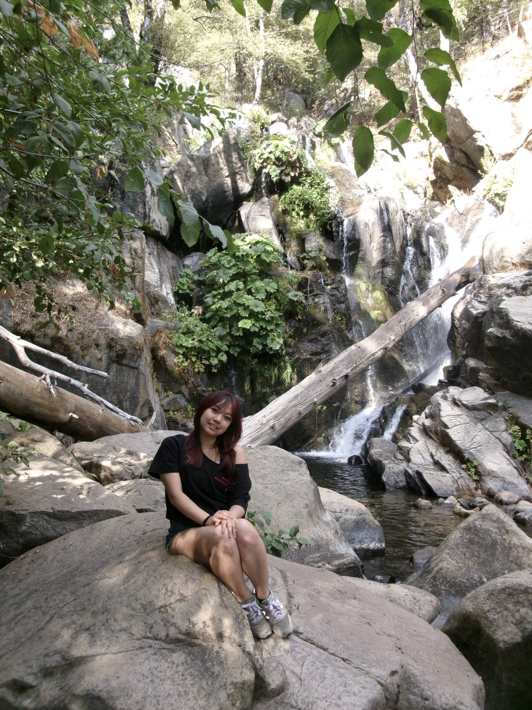

Hi! My name is Vanessa and I'm currently studying Mechanical Engineering and Architecture at UC Berkeley. I'm super passionate about product design and structural analysis. I'm currently an intern at Apple with the Mac Product Design team. I have previously interned at Boeing, as a Manufacturing Intern in the Airframe team, where I was on the first line of production. In addition, I was formerly a researcher in FLOW Lab, a fluid dynamics lab on campus, focusing on improving data collection quality.
On campus, I love getting involved with student orgs! I have been involved in CalSol, Berkeley's solar vehicle team, as a Chassis project lead. This has given me so much opportunity in both designing and project management. I continue to focus on sustainability through Surge, an electric motorcycle club, where we focus on conversion from gas to electrical. I also have served as Internal Vice President in Berkeley's Asian American Association, promoting cultural inclusivity and diversity on campus.
In my free time I love snowboarding, baking, gymnastics, hiking, and concerts!

University of California, Berkeley; College of Engineering
University of California, Berkeley; College of Environmental Design
University of California, Berkeley.
Cornell University; School of Continuing Education